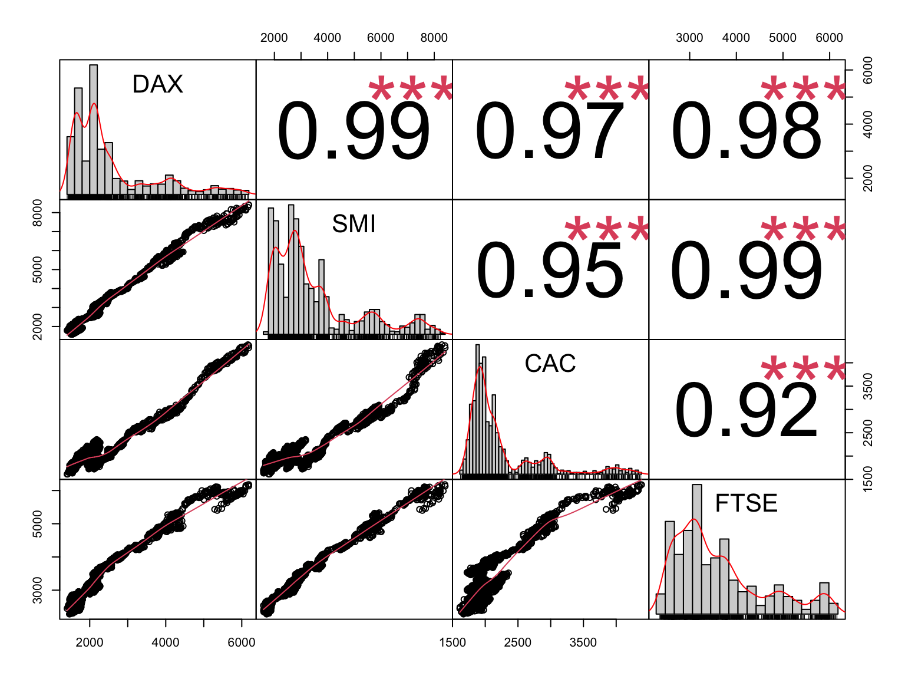
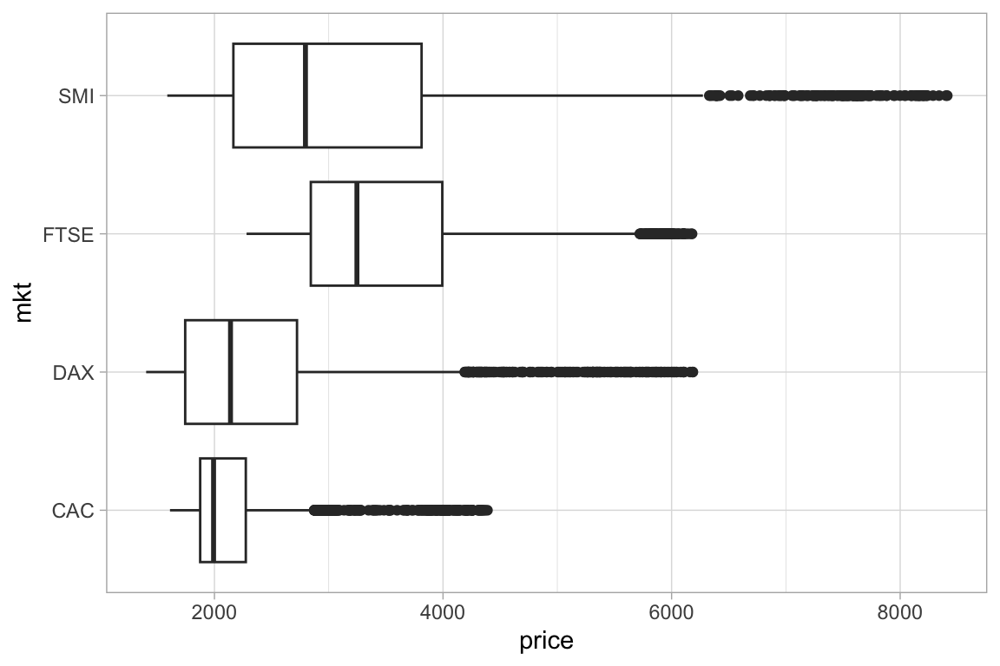
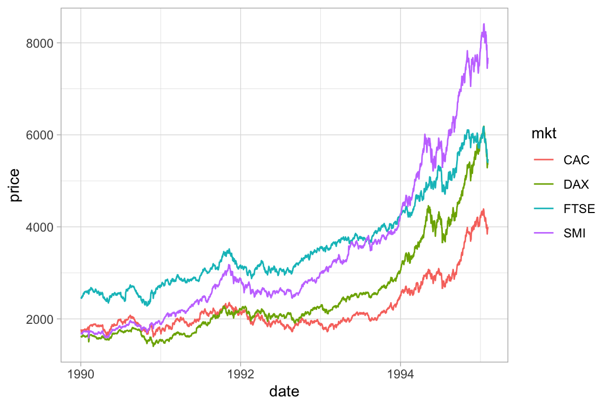

Code
data <- as.data.frame(datasets::EuStockMarkets) # time series convert to df
data$date <- seq.Date(from=as.Date('1990-01-02'), by=1, length.out = nrow(data))
data <- data %>% select(date, c(1:ncol(data)-1))[a template based on exploratory data analysis. use to get started and edit as necessary for purposes.]
[Note: requires _common.R file in same directory (or change source command)]
[built-in dataset EuStockMarkets to serve as example]
data <- as.data.frame(datasets::EuStockMarkets) # time series convert to df
data$date <- seq.Date(from=as.Date('1990-01-02'), by=1, length.out = nrow(data))
data <- data %>% select(date, c(1:ncol(data)-1))str(data)'data.frame': 1860 obs. of 5 variables:
$ date: Date, format: "1990-01-02" "1990-01-03" ...
$ DAX : num 1629 1614 1607 1621 1618 ...
$ SMI : num 1678 1688 1679 1684 1687 ...
$ CAC : num 1773 1750 1718 1708 1723 ...
$ FTSE: num 2444 2460 2448 2470 2485 ...summary(data) date DAX SMI CAC
Min. :1990-01-02 Min. :1402 Min. :1587 Min. :1611
1st Qu.:1991-04-11 1st Qu.:1744 1st Qu.:2166 1st Qu.:1875
Median :1992-07-19 Median :2141 Median :2796 Median :1992
Mean :1992-07-19 Mean :2531 Mean :3376 Mean :2228
3rd Qu.:1993-10-27 3rd Qu.:2722 3rd Qu.:3812 3rd Qu.:2274
Max. :1995-02-04 Max. :6186 Max. :8412 Max. :4388
FTSE
Min. :2281
1st Qu.:2843
Median :3247
Mean :3566
3rd Qu.:3994
Max. :6179 chart.Correlation(data[,2:ncol(data)], histogram = TRUE)
skim(data)| Name | data |
| Number of rows | 1860 |
| Number of columns | 5 |
| _______________________ | |
| Column type frequency: | |
| Date | 1 |
| numeric | 4 |
| ________________________ | |
| Group variables | None |
Variable type: Date
| skim_variable | n_missing | complete_rate | min | max | median | n_unique |
|---|---|---|---|---|---|---|
| date | 0 | 1 | 1990-01-02 | 1995-02-04 | 1992-07-19 | 1860 |
Variable type: numeric
| skim_variable | n_missing | complete_rate | mean | sd | p0 | p25 | p50 | p75 | p100 | hist |
|---|---|---|---|---|---|---|---|---|---|---|
| DAX | 0 | 1 | 2530.66 | 1084.79 | 1402.34 | 1744.10 | 2140.56 | 2722.37 | 6186.09 | ▇▂▂▁▁ |
| SMI | 0 | 1 | 3376.22 | 1663.03 | 1587.40 | 2165.62 | 2796.35 | 3812.43 | 8412.00 | ▇▃▁▁▁ |
| CAC | 0 | 1 | 2227.83 | 580.31 | 1611.00 | 1875.15 | 1992.30 | 2274.35 | 4388.50 | ▇▂▁▁▁ |
| FTSE | 0 | 1 | 3565.64 | 976.72 | 2281.00 | 2843.15 | 3246.60 | 3993.57 | 6179.00 | ▇▇▂▂▂ |
# pivot sw to have all metrics in a metrics col and values in a values col
data_long <- data %>% pivot_longer(cols = c(2:ncol(data)), names_to = "mkt", values_to = "price")
data_long %>% ggplot(aes(x=price, y=mkt))+geom_boxplot()
data_long %>% ggplot(aes(x=date, y=price, color=mkt))+geom_line()